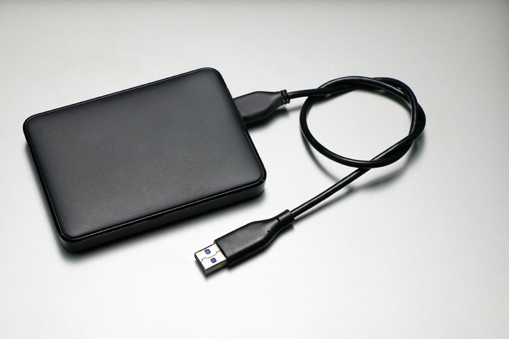

Core 1 Review
List of what I use to take notes:
Google Docs
Notion
Stickies
One Note

I archive my digital photos with an external hardrive
Ways I organize Digitally:
google drive
To-Do app
Google Calender
Reminder app
Ways I organize Physically:
Journalling
Sticky Notes
External Services I use to stay organized
Google Docs
Notion
To-DO App